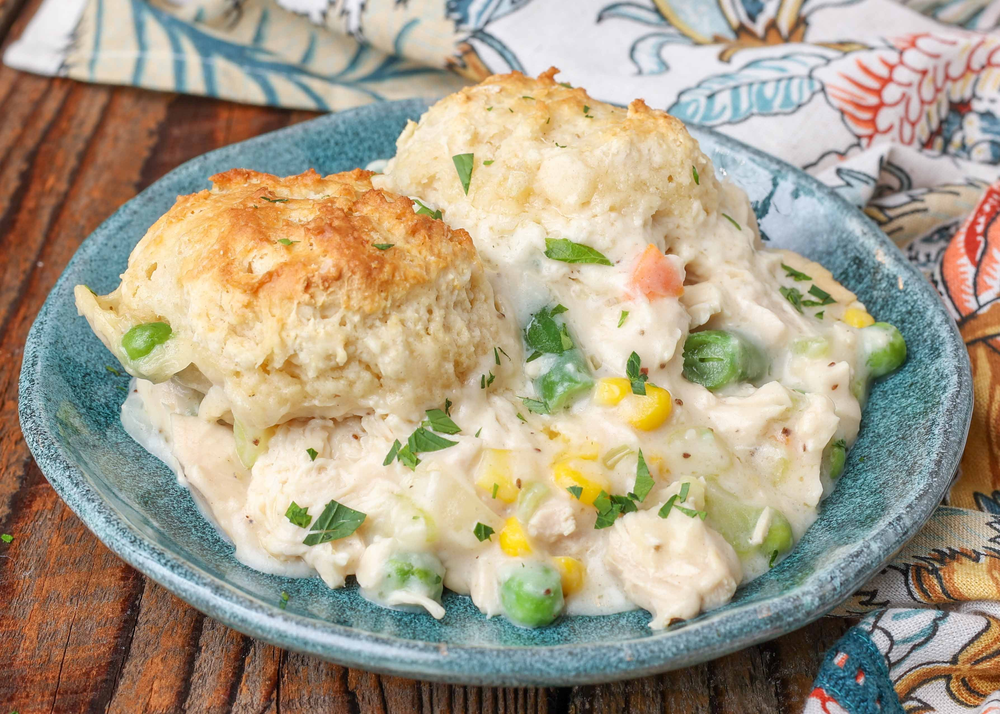

Chicken Pot Pie Soup Recipe

Chicken pot pie soup is a warm and comforting dish inspired by the classic chicken pot pie. It features
tender pieces of chicken simmered in a creamy, savory broth with vegetables such as carrots, peas, celery,
and potatoes. The
soup has a thick, rich texture and is seasoned with herbs like thyme and parsley, giving it a hearty
homemade flavor.
Unlike traditional pot pie, which is baked with a flaky crust, this version captures the same comforting
taste in
soup form and is often served with or over biscuits, crackers, or crusty bread (i.e. French Baget) for
dipping.
- Prep Time: 10 mins
- Cook Time: 4 hrs
- Total Time: 4 hr 10 mins
- Servings: 8
Note: Double the recipe to increase the serving size
Instructions
- Combine chicken, condensed soups, frozen vegetables, seasoned salt, white pepper, onion powder, and
garlic powder in a
large bowl; stir until it is mixed well. Add milk slowly, while stirring, until fully incorporated. Pour
into the bottom
of a slow cooker.
- Cover and cook on Low until chicken is no longer pink in the centers and flavors have melded, 4 to 6
hours.
Cook Notes:
I try to be as dairy-free as possible so, I use So
Delicious(R) coconut milk instead of dairy. Feel
free to
use
either.
You can use cream of broccoli soup instead of cream of celery if preferred.
If you would like a thicker soup, you can make a Roux by mixing: 2 tablespoons cornstarch with 4 tablespoons
water and add it into the soup
slowly while periodically stirring for the last 2 hours of cooking.